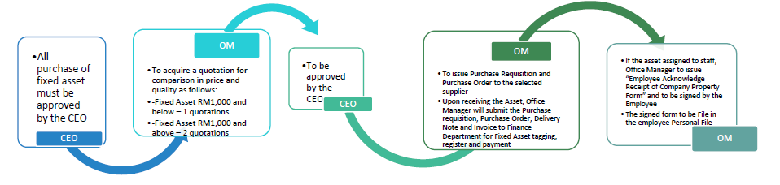
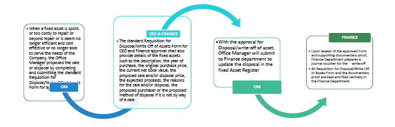

The objective of this manual is to set forth the regulations and procedures governing the Company fixed asset management. It is intended to assist personnel in implementing and maintaining an effective property control program.
Scope and Responsibilities
This policy applies to staff with responsibility for purchasing, maintaining or disposing of fixed Assets, including Department Heads to safeguard and maintain its Fixed Assets in order to receive the maximum benefit from those assets, to comply with the Company requirements regarding the use and disposition of Fixed Assets, and to properly account for its Fixed Assets for financial reporting purposes.
Capitalized of Fixed Assets
A capitalize of fixed asset is defined as an asset with an individual unit cost (GST exclusive) greater than RM500.00. The depreciated value of the asset is recorded in the balance sheet. Capitalized fixed assets are recorded under the following categories:
Computer Equipment
Office Equipment
Furniture & Fittings
Office Renovation
Motor Vehicles
Land & Building
Depreciation
Depreciation is the gradual transfer of the original cost of a Fixed Asset from the Balance Sheet to the Profit and Loss Account. The transfer is done by a Journal entry. The company’s depreciation policies are as follows:
Asset
Depreciation
Computer Equipment
3 years
Office Equipment
10 years
Furniture & Fittings
10 years
Office Renovation & Fixture
10 years
Motor Vehicle
5 years
Land & Building
Fixed Asset Register
A fixed Register is the record of a business’s Fixed Asset. The basic record includes the purchase cost, date of purchase and supplier’s name. Then the depreciation each year is recorded, giving a Net Book Value (NBV) for each fixed asset, asset tagging and asset location.
Procedure
PURCHASE OF FIXED ASSET

Procedure for Purchase of Fixed Asset
All purchase of fixed asset must be approved by the CEO.
Office Manager to acquire a quotation for comparison in price and quality as follows:
Fixed Asset RM1,000 and below – 1 quotations
Fixed Asset RM1,000 and above – 2 quotations
The quotation to be approved by the CEO and Office Manager to issue Purchase Requisition and Purchase Order to the selected supplier.
Upon receiving the Asset, Office Manager will submit the Purchase requisition, Purchase Order, Delivery Note and Invoice to Finance Department for Fixed Asset tagging, register and payment.
If the asset assigned to staff, Office Manager to issue “Employee Acknowledge Receipt of Company Property Form” and to be signed by the Employee.
The signed form to be File in the employee Personal File.
FIXED ASSET TAGGING
Fixed asset tagging will be based on where the fixed asset will be located
For Ground Floor it will begin with G, 1st Floor start with 1st and 2nd floor it will start with 2nd
If the fixed asset moved to different location, then the asset tag will be change too
Change of tagging must be update in the Fixed Asset list
DISPOSAL OF FIXED ASSET

Procedure for Disposal of Fixed Asset
When a fixed asset is spoilt, or too costly to repair or beyond repair or is deem no longer efficient and cost effective or no longer able to serve the needs of the Company, the Office Manager proposed the sale or disposal by completing and submitting the standard Requisition for Disposal/Write Off of Assets Form for approval.
The standard Requisition for Disposal/Write Off of Assets Form for CEO and Finance approval shall also provide details of the fixed assets such as the description, the year of purchase, the original purchase price, the current net book value, the proposed sale and/or disposal price, the expected proceeds, the reasons for the sale and/or disposal, the proposed purchaser or the proposed method of disposal if it is not by way of a sale.
With the approval for Disposal/write-off of asset, Office Manager will submit to Finance department to update the disposal in the fixed Asset Register.
Upon receipt of the approved Form and supporting documentary proof, Finance Department prepares a journal voucher for the write-off.
All Requisition for Disposal/Write Off of Assets Form and the documentary proof are kept and filed centrally in the Finance Department.